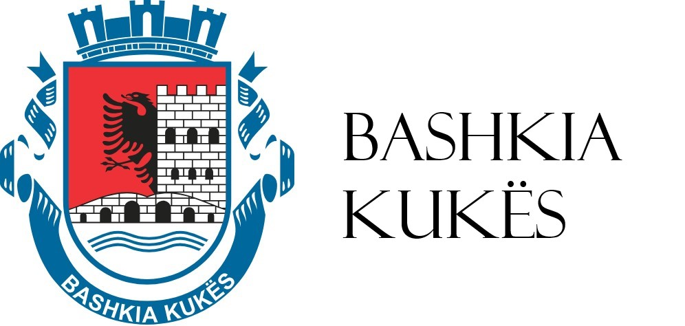
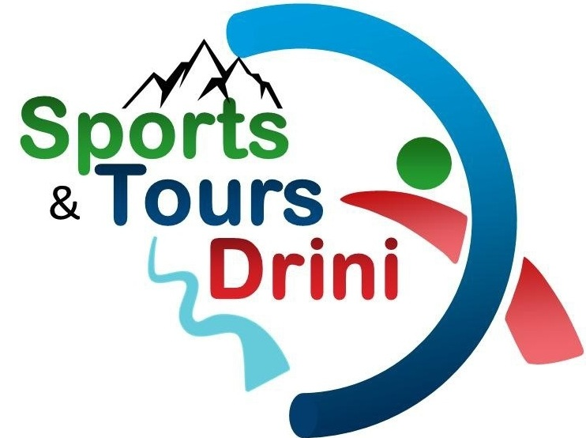

<!DOCTYPE html>
<html>
<head>
</html>  <meta charset="UTF-8">
  <meta name="viewport" content="width=device-width, initial-scale=1.0">
  <title>Sponsors</title>
  <link rel="icon" href="icona.ico">
  <link rel="preconnect" href="https://fonts.googleapis.com">
  <link rel="preconnect" href="https://fonts.gstatic.com" crossorigin>
  <link href="https://fonts.googleapis.com/css2?family=Merriweather:ital,wght@0,300;0,400;0,700;0,900;1,300;1,400;1,700;1,900&display=swap" rel="stylesheet">
  <link href="https://fonts.googleapis.com/css2?family=Poppins:ital,wght@0,100;0,200;0,300;0,400;0,500;0,600;0,700;0,800;0,900;1,100;1,200;1,300;1,400;1,500;1,600;1,700;1,800;1,900&display=swap" rel="stylesheet">
  <link href="https://fonts.googleapis.com/css2?family=Rubik:ital,wght@0,300..900;1,300..900&display=swap" rel="stylesheet">
  <link rel="stylesheet" href="https://www.w3schools.com/w3css/4/w3.css">
  <link href="https://fonts.googleapis.com/css2?family=Bebas+Neue&display=swap" rel="stylesheet">
  <style>
  body {
    margin: 0;
    font-family: Arial, sans-serif;
    display: grid;
    grid-template-columns: auto 0px; 
  }
  .navbar {
    display: flex;
    align-items: center;
    justify-content: center;
    padding: 10px 5px;
  }
  .navbar-logo {
    display: flex;
    align-items: center;
    margin-right: 150px;
  }
  .navbar-logo img {
    width:auto;
    height: 80px;
  }
  .navbar-links {
    display: flex;
    gap: 15px;
    margin-right: 50px;
  }
  .navbar-links a {
    text-decoration: none;
    color: #333;
    font-size: 16px;
    padding: 20px 10px;
    transition: color 0.3s ease;
  }
  .navbar-links a:hover {
    color: #f56a00;
  }
  .dropdown {
    position: absolute;
    top: 100%;
    left: 0;
    background-color: white;
    box-shadow: 0 4px 6px rgba(0, 0, 0, 0.1);
    display: none;
    flex-direction: column;
    border: 1px solid #ccc;
    border-radius: 5px;
    z-index: 10;
  }
  .dropdown a {
    padding: 10px;
    white-space: nowrap;
    text-decoration: none;
    color: #333;
    font-size:  14px;
    transition: background-color 0.3s;
  }
  .dropdown a:hover {
    background-color: #f56a00;
    color: white;
  }
  .navbar-item {
    position: relative;
    margin-top: 10px;
  }
  .navbar-item:hover .dropdown {
    display: flex;
  }
  .navbar-register {
    background-color: #f56a00;
    color: white;
    border: none;
    border-radius: 5px;
    padding: 10px 20px;
    font-size: 13px;
    cursor: pointer;
    text-transform: uppercase;
  }
  .navbar-register:hover {
    background-color: #ff7e26;
  }
  #runn {
    background: url('https://nc.assp.org/wp-content/uploads/sites/425/2018/05/A-New-Design-2.png') no-repeat center center/cover;
    width: 100%;
    height: 40%;
  }
  .info-text, .info-video, .info-winner {
    display: flex;
    align-items: center;
    justify-content: space-between;
    box-shadow: 0 4px 8px rgba(0, 0, 0, 0.1);
    padding: 20px;
  }
  button {
    border: 2px solid #24b4fb;
    background-color: #24b4fb;
    border-radius: 0.9em;
    cursor: pointer;
    padding: 0.8em 1.2em 0.8em 1em;
    transition: all ease-in-out 0.2s;
    font-size: 16px;
  }

  button span {
    display: flex;
    justify-content: center;
    align-items: center;
    color: #fff;
    font-weight: 600;
  }

  button:hover {
    background-color: #0071e2;
  }

#title{
  margin-top:20px; margin-bottom:10px; font-size:50px; font-family: 'Bebas Neue', serif;
          font-weight: 500; font-style: normal;
}
  .footer {
    display: flex;
    justify-content: center;
    align-items: center;
    padding: 20px 50px;
    background-color: #fafafa;
    color: #fff;
    font-family: Arial, sans-serif;
  }
  .footer-logo img {
    height: 98px;
    margin-left: 50px;
    margin-bottom: 50px;
  }
  .footer-info {
    color: black;
    font-size: 14px;
    font-family: "Merriweather", serif;
    font-weight: 300;
    font-style: normal;
    margin-left: 50px;
    margin-right: 50px;
    margin-bottom: 50px;
  }
  .footer-contact {
    text-align: left;
    color: black;
    font-family: "Poppins", serif;
    font-weight: 300;
    font-style: normal;
    margin-bottom: 50px;
  }
  .footer-contact p {
    margin: 2px 0;
    font-size: 14px;
  }
  .footer-contact a {
    color: #f56a00;
    text-decoration: none;
  }
  .footer-contact a:hover {
    text-decoration: underline;
  }
  .top {
    position: fixed;
    bottom: 20px;
    right: 20px;
    width: 45px;
    aspect-ratio: 1;
    background: #ff8b24;
    border-radius: 10px;
    z-index: 1000;
    display: none;
  }
  .top:before {
    content: "";
    position: absolute;
    inset: 30%;
    transform: translateY(20%) rotate(-45deg);
    border-top: 5px solid #fff;
    border-right: 5px solid #fff;
  }
  .cards {
    display: flex;
    flex-wrap: nowrap;
    gap: 10px;
  }
  .card {
   flex: 0 0 30%;
   position: relative;
   display: inline-block;
   margin-right: 50px;
 }

 .remove-when-use {
  text-align: center;
}

.remove-when-use img {
  width: 100%;
  height: auto;
  display: block;
}

.details {
  color: white;
  box-shadow: 0 3px 10px rgb(0 0 0 / 0.2);
  width: 100%;
  background-color: rgba(0, 0, 0, 0.5);
  position: absolute;
  bottom: 0;
  height: 2.6em;
  transition: height .5s ease-in-out;
  padding: 0.6em;
  overflow: hidden;
}

.details > p {
  font-size: 0.8em;
  margin-top: 0.5em;
}

.card:hover > .details {
  height: 6.7em;
}


.modale {
  display: none;
  position: fixed;
  z-index: 10000;
  padding-top: 100px;
  left: 0;
  top: 0;
  width: 100%;
  height: 100%;
  overflow: auto;
  background-color: rgb(0,0,0); /* Fallback color */
  background-color: rgba(0,0,0,0.9); /* Black with transparency */
}

.imazhe {
  margin: auto;
  display: block;
  width: 70%;
}

.clos {
  position: absolute;
  top: 10px;
  right: 25px;
  color: #f1f1f1;
  font-size: 40px;
  font-weight: bold;
  transition: 0.3s;
}

.clos:hover,
.clos:focus {
  color: #bbb;
  text-decoration: none;
  cursor: pointer;
}
    }
#language-switcher {
    position: absolute;
    top: 10px;
    right: 20px;
    z-index: 1000;
}

#lang-select {
    padding: 5px;
    font-size: 14px;
    border: 1px solid #ccc;
    border-radius: 5px;
    cursor: pointer;
}
@media (max-width: 768px) {
  #btn{
  margin-bottom: 50px;
}
  #kb{
  display: flex;
    margin-right: 100px;
    margin-left: 50px;
    flex-direction: column;
    align-items: center;
}
#runn {
    background: url('https://t4.ftcdn.net/jpg/07/69/99/07/360_F_769990774_cTE1tjyTq45aSBlL8tnqZzDQZ82YTU7R.jpg') no-repeat center center/cover;
    width: 100%;
    height: 50%;
  }
  
}

@media (max-width: 480px) {
  #btn{
  margin-bottom: 50px;
}
#kb{
  display: flex;
    margin-right: 100px;
    margin-left: 50px;
    flex-direction: column;
    align-items: center;
}
#runn {
    background: url('https://t4.ftcdn.net/jpg/07/69/99/07/360_F_769990774_cTE1tjyTq45aSBlL8tnqZzDQZ82YTU7R.jpg') no-repeat center center/cover;
    width: 100%;
    height: 50%;
  }
}

@media (max-width: 912px) {
#kb{
  display: flex;
    margin-right: 100px;
    margin-left: 50px;
    flex-direction: column;
    align-items: center;
}
#btn{
  margin-bottom: 50px;
}
#runn {
    background: url('https://t4.ftcdn.net/jpg/07/69/99/07/360_F_769990774_cTE1tjyTq45aSBlL8tnqZzDQZ82YTU7R.jpg') no-repeat center center/cover;
    width: 100%;
    height: 50%;
  }
}

</style>
</head>
<body>
  <div>
    <nav class="navbar">
      <div class="navbar-logo">
        <a href="index.html"></a>
      </div>
      <div class="navbar-links">
        <div class="navbar-item">
          <a href="#" id="race">The Races</a>
          <div class="dropdown">
            <a href="Half Marathon.html" id="half">Half Marathon</a>
            <a href="10Km.html" id="km">10Km</a>
          </div>
        </div>
        <div class="navbar-item">
          <a href="Sponsors.html" id="spon">Sponsors</a>
          <a href="Volunteers.html" id="vol">Volunteers</a>
        </div>
        <div class="navbar-item">
          <a href="#" onclick="openModal()" id="agend">Schedule of Events</a>
        </div>
        <button class="navbar-register"><a href="https://docs.google.com/forms/d/e/1FAIpQLSdIwyFRIjScGLJqbSq3-ufkJwbsB-YQHBQQH2Bd1CWrFiNIOQ/viewform" target="_blank" style="text-decoration: none; color:white;" id="reg">Register</a></button>
      </div>
          <div id="language-switcher">
            <select id="lang-select">
                <option value="">Select Language</option>
                <option value="en">English</option>
                <option value="sq">Shqip</option>
                <option value="es">Español</option>
                <option value="tr">Türkçe</option>
            </select>
          </div>
    </nav>
    <div class="info-text" id="runn">
    </div>
    <div class="info-text" style="padding-bottom:60px;">
      <div style="display:flex;margin-right:100px; margin-left:50px;" id="kb">
        <div style="margin-right:100px;">
          <h2 id="title">Your Brand In Front Of Our Audience</h2>
          <p style="text-align: justify; text-justify: inter-word; font-family: 'Rubik', serif; font-weight: 400;
          font-style: normal; font-size:15px; color:#282928;" id="p1">Be a part of something extraordinary! Kukës Marathon is more
          than just a race—it's a celebration of athleticism, community, and the breathtaking beauty of Kukës. By sponsoring this event, your brand will gain unparalleled exposure to a diverse and engaged audience.</p>
          <p style="text-align: justify; text-justify: inter-word; font-family: 'Rubik', serif; font-weight: <weight>;
            font-style: normal; font-size:15px; color:#282928;" id="p2">
            Here's why partnering with us is a win for your business:</p>
            <ul><li><p style="text-align: justify; text-justify: inter-word; font-family: 'Rubik', serif; font-weight: <weight>;font-style: normal; font-size:13px; color:#282928;"><strong id="p3">Local and Global Reach:</strong> <span id="p4">The Kukës Marathon attracts participants and spectators from across Albania and beyond, giving your brand visibility on both local and international stages.</span></p></li>
              <li><p style="text-align: justify; text-justify: inter-word; font-family: 'Rubik', serif; font-weight: <weight>;
                font-style: normal; font-size:13px; color:#282928;"><strong id="p5">Connect With an Active Audience:</strong> <span id="p6">Align your brand with health-conscious, goal-oriented individuals passionate about sports, fitness, and adventure.</span></p></li>
                <li><p style="  font-family: 'Rubik', serif; font-weight: <weight>;
                  font-style: normal; font-size:13px; color:#282928;"><strong id="p7">Marketing That Moves:</strong> <span id="p8">From event-day banners and digital promotions to race-day materials, your logo and messaging will be prominently featured throughout our platforms and events.</span></p></li>
                  <li><p style="text-align: justify; text-justify: inter-word; font-family: 'Rubik', serif; font-weight: <weight>;
                    font-style: normal; font-size:13px; color:#282928;"><strong id="p9">A Community Impact:</strong> <span id="p10">Showcase your commitment to supporting local events, tourism, and a healthy lifestyle by contributing to a memorable experience for participants and visitors.</span></p></li>
                  </ul>
                  <br>
                  <a href="https://docs.google.com/forms/d/e/1FAIpQLSfTJMP63aBrA4bjYBRiMiKkQ9twbwCxjx23KiwXm-9fWz2Zmw/viewform" target="_blank">
                    <button style="margin-left:20px; margin-right:50px;" id="btn">
                      <span>
                        <svg
                        height="24"
                        width="24"
                        viewBox="0 0 24 24"
                        xmlns="http://www.w3.org/2000/svg"
                        >
                        <path d="M0 0h24v24H0z" fill="none"></path>
                        <path d="M11 11V5h2v6h6v2h-6v6h-2v-6H5v-2z" fill="currentColor"></path>
                      </svg>
                      <span id="p11">
                      Become Our Sponsor
                    </span>
                    </span>
                  </button>
                </a>
              </div>
              <div style="max-width:400px; max-height:500px;margin-bottom:30px;" id="img">
                
                
              </div>
            </div>
          </div>
<script>
const translations = {
  "sq": () => ({
    "race": `Garat`,
    "half": `Gjysmë maratona`,
    "km": `10 km gara`,
    "spon": `Sponsorët`,
    "vol": `Vullnetarët`,
    "agend": `Agjenda`,
    "reg": `Regjistrohu`,
    "title": `Marka juaj përballë audiencës sonë`,
    "p1": `Bëhu pjesë e diçkaje të jashtëzakonshme! Maratona e Kukësit është më shumë se thjesht një garë—është një festë e atletikës, komunitetit dhe bukurisë befasuese të Kukësit. Duke sponsorizuar këtë ngjarje, marka juaj do të fitojë ekspozim të pashembullt ndaj një audiencë të larmishme dhe të angazhuar.`,
    "p2": `Ja pse partneriteti me ne është një fitore për biznesin tuaj:`,
    "p3": `Arritje lokale dhe globale: `,
    "p4": `Maratona e Kukësit tërheq pjesëmarrës dhe spektatorë nga e gjithë Shqipëria dhe më gjerë, duke i dhënë shikueshmëri markës suaj si në skenat lokale ashtu edhe ato ndërkombëtare.`,
    "p5": `Lidhuni me një audiencë aktive: `,
    "p6": `Përafroni markën tuaj me individë të ndërgjegjshëm për shëndetin, të orientuar drejt qëllimeve, të pasionuar pas sportit, fitnesit dhe aventurës.`,
    "p7": `Marketingu që lëviz: `,
    "p8": `Nga banderolat e ditëve të ngjarjeve dhe promovimet dixhitale te materialet e ditës së garës, logoja dhe mesazhet tuaja do të shfaqen dukshëm në platformat dhe ngjarjet tona.`,
    "p9": `Një ndikim në komunitet:: `,
    "p10": `Shfaqni angazhimin tuaj për të mbështetur ngjarjet lokale, turizmin dhe një mënyrë jetese të shëndetshme duke kontribuar në një përvojë të paharrueshme për pjesëmarrësit dhe vizitorët.`,
    "p11": `Bëhuni sponsori ynë`,
    "fund": `Kukës<br>Maj, 2025`,
    "fundi": `&copy; 2024 Kukës Maraton`,
    "kontakt": `Na kontaktoni:`
  }),

  "en": () => ({
    "race": `The Races`,
    "half": `Half Marathon`,
    "km": `10Km`,
    "spon": `Sponsors`,
    "vol": `Volunteers`,
    "agend": `Schedule of Events`,
    "reg": `Register`,
    "title": `Your Brand In Front Of Our Audience`,
    "p1": `Be a part of something extraordinary! Kukës Marathon is more than just a race—it is a celebration of athleticism, community, and the breathtaking beauty of Kukës. By sponsoring this event, your brand will gain unparalleled exposure to a diverse and engaged audience.`,
    "p2": `Here is why partnering with us is a win for your business:`,
    "p3": `Be Inspired: `,
    "p4": `Witness the determination, energy, and spirit of marathon runners as they conquer the scenic trails of Kukës.`,
    "p5": `Learn and Grow: `,
    "p6": `Gain valuable event management experience and skills while working alongside a motivated team.`,
    "p7": `Meet New People: `,
    "p8": `Connect with like-minded individuals, make friends, and feel the camaraderie of being part of a shared mission.`,
    "p9": `Make an Impact: `,
    "p10": `Your time and effort will directly contribute to the success of an event that promotes fitness, tourism, and community pride in Kukës.`,
    "p11": `Become Our Sponsor`,
    "docs": `Volunteer Guide`,
    "fund": `Kukës<br>May, 2025`,
    "fundi": `&copy; 2024 Kukës Marathon`,
    "kontakt": `Contact Us:`
  }),
  "es": () => ({
    "race": `Las razas`,
    "half": `Media Maraton`,
    "km": `10Km`,
    "spon": `Patrocinadores`,
    "vol": `Voluntarios`,
    "agend": `Calendario de eventos`,
    "reg": `Registro`,
    "title": `Tu marca frente a nuestra audiencia`,
      "p1": `¡Sé parte de algo extraordinario! El Maratón de Kukës es más que una carrera: es una celebración del atletismo, la comunidad y la impresionante belleza de Kukës. Al patrocinar este evento, tu marca obtendrá una exposición incomparable ante una audiencia diversa y comprometida.`,
    "p2": `He aquí por qué asociarse con nosotros es una victoria para su negocio:`,
    "p3": `Alcance local y global: `,
    "p4": `el Maratón de Kukës atrae a participantes y espectadores de toda Albania y más allá, lo que le da visibilidad a su marca tanto en el escenario local como internacional.`,
    "p5": `Conéctese con una audiencia activa: `,
    "p6": `alinee su marca con personas conscientes de la salud y orientadas a objetivos, apasionadas por los deportes, el fitness y la aventura.`,
    "p7": `Marketing que mueve: `,
    "p8": `desde banners del día del evento y promociones digitales hasta materiales del día de la carrera, su logotipo y mensaje ocuparán un lugar destacado en nuestras plataformas y eventos.`,
    "p9": `Un impacto comunitario: `,
    "p10": `muestre su compromiso de apoyar eventos locales, turismo y un estilo de vida saludable contribuyendo a una experiencia memorable para los participantes y visitantes.`,
    "p11": `Conviértete en nuestro patrocinador`,
    "fund": `Kukës<br>Mayo de 2025`,
    "fundi": `&copy; 2024 Maratón de Kukës`,
    "kontakt": `Contáctenos:`
  }),
  "tr": () => ({
    "race": `Yarışlar`,
    "half": `Yari Maraton`,
    "km": `10Km`,
    "spon": `Sponsorlar`,
    "vol": `Gönüllüler`,
    "agend": `Etkinlik Takvimi`,
    "reg": `Kayit olmak`,
    "title": `Markanız Hedef Kitlemizin Önünde`,
    "p1": `Olağanüstü bir şeyin parçası olun! Kukës Maratonu sadece bir yarıştan daha fazlasıdır; atletizmin, topluluğun ve Kukësin nefes kesici güzelliğinin bir kutlamasıdır. Bu etkinliğe sponsor olarak, markanız çeşitli ve ilgili bir kitleye eşsiz bir şekilde tanıtılacaktır.`,
    "p2": `Bizimle ortaklık kurmanın işletmeniz için neden bir kazanç olduğunu açıklıyoruz:`,
    "p3": `Yerel ve Küresel Erişim: `,
    "p4": `Kukës Maratonu, Arnavutlukun dört bir yanından ve dünyanın dört bir yanından katılımcı ve seyirci çekerek markanıza hem yerel hem de uluslararası sahnelerde görünürlük kazandırıyor.`,
    "p5": `Aktif Bir Hedef Kitleyle Bağlantı Kurun: `,
    "p6": `Markanızı spor, fitness ve maceraya tutkulu, sağlık bilincine sahip, hedef odaklı bireylerle uyumlu hale getirin.`,
    "p7": `Hareket Eden Pazarlama:  `,
    "p8": `Etkinlik günü pankartlarından ve dijital promosyonlardan yarış günü materyallerine kadar, logonuz ve mesajlarınız platformlarımızda ve etkinliklerimizde belirgin bir şekilde yer alacaktır.`,
    "p9": `Topluma Etki: `,
    "p10": `Katılımcılar ve ziyaretçiler için unutulmaz bir deneyime katkıda bulunarak yerel etkinlikleri, turizmi ve sağlıklı bir yaşam tarzını destekleme konusundaki kararlılığınızı gösterin.`,
    "p11": `Sponsorumuz Olun`,
    "fund": `Kukës<br>Mayıs 2025`,
    "fundi": `&copy; 2024 Kukës Maratonu`,
    "kontakt": `Bize Ulaşın:`
  })
};

function updateContent(language) {
  const translation = translations[language]();
  document.getElementById("race").innerHTML = translation.race;
  document.getElementById("half").innerHTML = translation.half;
  document.getElementById("km").innerHTML = translation.km;
  document.getElementById("spon").innerHTML = translation.spon;
  document.getElementById("vol").innerHTML = translation.vol;
  document.getElementById("agend").innerHTML = translation.agend;
  document.getElementById("reg").innerHTML = translation.reg;
  document.getElementById("title").innerHTML = translation.title;
  document.getElementById("p1").innerHTML = translation.p1;
  document.getElementById("p2").innerHTML = translation.p2;
  document.getElementById("p3").innerHTML = translation.p3;
  document.getElementById("p4").innerHTML = translation.p4;
  document.getElementById("p5").innerHTML = translation.p5;
  document.getElementById("p6").innerHTML = translation.p6;
  document.getElementById("p7").innerHTML = translation.p7;
  document.getElementById("p8").innerHTML = translation.p8;
  document.getElementById("p9").innerHTML = translation.p9;
  document.getElementById("p10").innerHTML = translation.p10;
  document.getElementById("p11").innerHTML = translation.p11;
  document.getElementById("fund").innerHTML = translation.fund;
  document.getElementById("fundi").innerHTML = translation.fundi;
  document.getElementById("kontakt").innerHTML = translation.kontakt;

}

function handleLanguageChange(event) {
  const selectedLanguage = event.target.value;
  updateContent(selectedLanguage);
}
document.getElementById("lang-select").addEventListener("change", handleLanguageChange);
updateContent("en");

    </script>
          <footer class="footer">
            <div class="footer-logo">
              
            </div>
            <div class="footer-info">
              <p id="fund">Kukës<br>May, 2025</p>
              <p id="fundi">&copy; 2024 Kukës Marathon</p>
            </div>
            <div class="footer-contact">
              <p id="kontakt">Contact Us:</p>
              <p>
                <a href="mailto:kukesmarathon@gmail.com">kukesmarathon@gmail.com</a><br>
                <a href="mailto:orgcyp@hotmail.com">orgcyp@hotmail.com</a><br>
              </p>
            </div>
          </footer>
        </div>
        <a href="#" class="top"></a>
        <div id="kasi" class="modale">
  <span class="clos" onclick="closeModal()">&times;</span>
  
</div>
        <script>

        document.addEventListener("DOMContentLoaded", () => {
          const topButton = document.querySelector(".top");

          window.addEventListener("scroll", () => {
            if (window.scrollY > 100) {
              topButton.style.display = "block";
            } else {
              topButton.style.display = "none";
            }
          });

          topButton.addEventListener("click", (e) => {
            e.preventDefault();
            window.scrollTo({ top: 0, behavior: "smooth" });
          });
        });
        function openModal() {
  document.getElementById("kasi").style.display = "block";
}

function closeModal() {
  document.getElementById("kasi").style.display = "none";
}
        </script>
      </body>
      </html>
